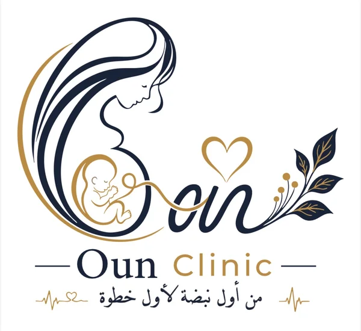

عيادات عون
رعاية متخصصة لصحة المرأة في كل مراحل حياتها
من أول نبضة… لأول خطوة
مساحتك لصحة المرأة، من الدورة إلى الحمل وما بعد الولادة
متابعة شخصية على جهازك، ومعلومات تثقيفية، وتواصل مباشر مع العيادة عند الحاجة.
ضيفي التطبيق على الشاشة الرئيسية
احجزي كشفواتساب أو اتصال، والفروع والمواعيد
الطوارئ 24 ساعةاتصلي على طول
كتاب «مهد الأمان»من التخطيط للحمل لحد بعد الولادة
صحتيالدورة الشهرية والتبويض وخطة الطبيب
إمتى أكلم الدكتور فورًا؟علامات الخطر في الحمل وبعد الولادة
رحلة الحملمعلومات عامة حسب أسبوع الحمل
اسألي عونإجابات للأسئلة الصحية الشائعة
ملفي الصحيملخص المتابعة ونسخة احتياطية
جمعتين كل شهر مجانًا لوجه اللهاعرفي التفاصيل في العروض والأخبار
متابعتي زياراتك وأدويتك وحاسبة الحمل
افتحي متابعتيخدماتنا
متابعة الحمل والولادة
أمراض النساء والرعاية الشاملة
جراحات المناظير النسائية
الحقن المجهري وتأخر الإنجاب
آخر الأخبار كل الأخبار
تذكيراتك مواعيد متوقعة ومسجلة
هذه تذكيرات داخل التطبيق فقط وليست إشعارات مضمونة في الخلفية. تأكدي من المواعيد مع العيادة.
التطبيق بيسجّل إحصائيات استخدام عامة، زي عدد الزيارات وأكتر المواضيع قراءة، من غير أي بيانات شخصية: مفيش أسماء ولا تواريخ ولا أدوية ولا رسايل.